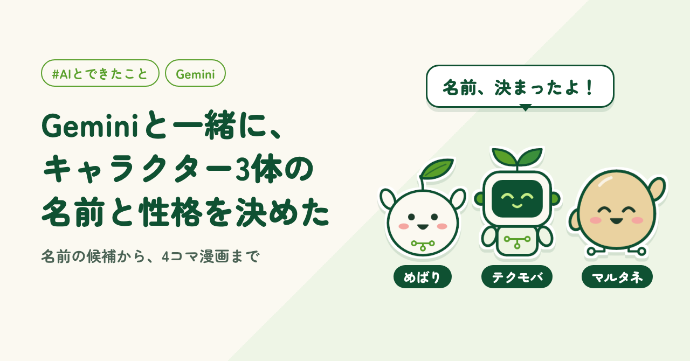
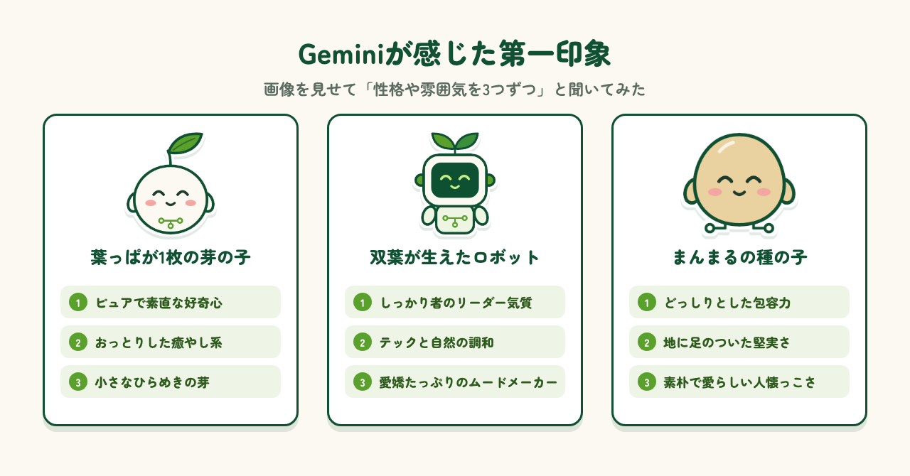
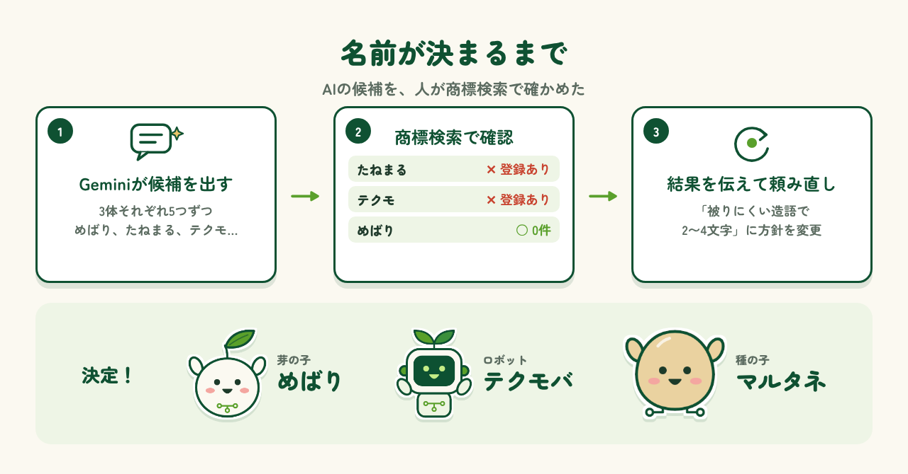
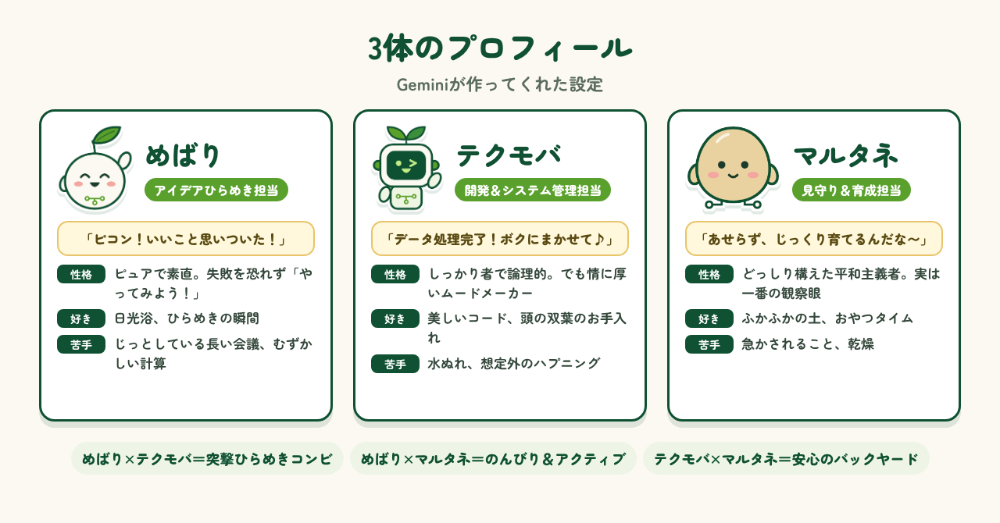
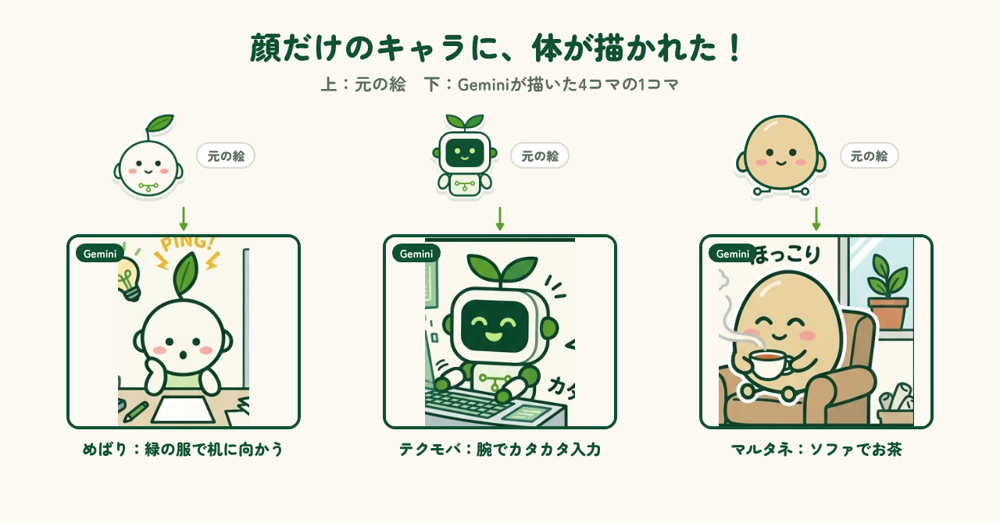
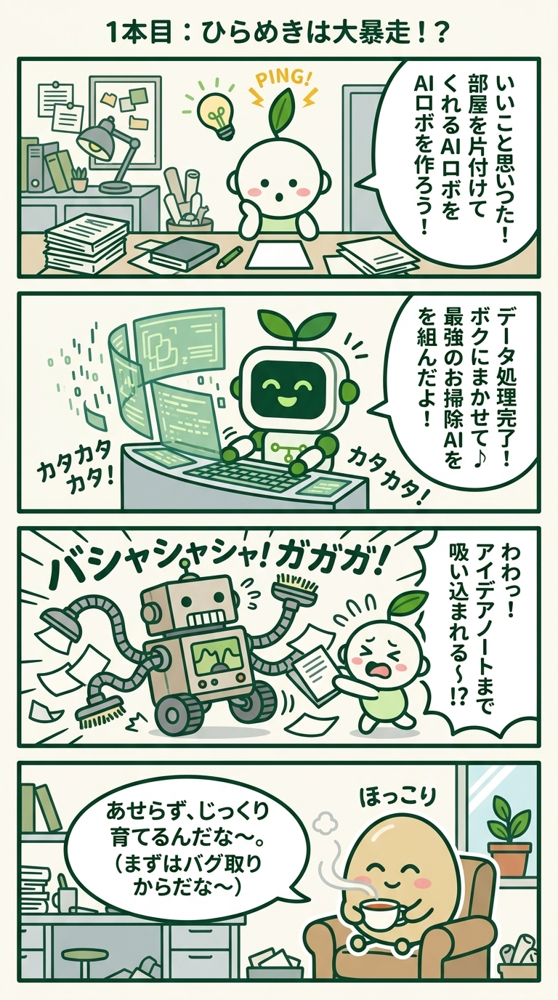
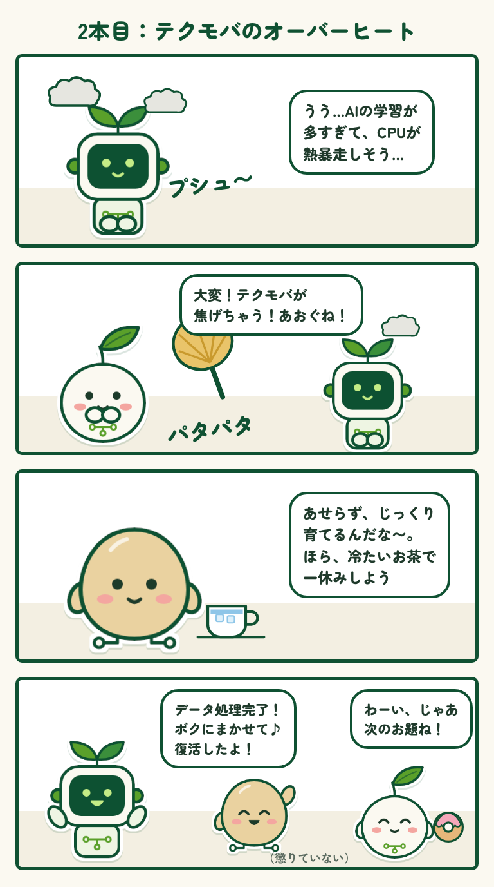
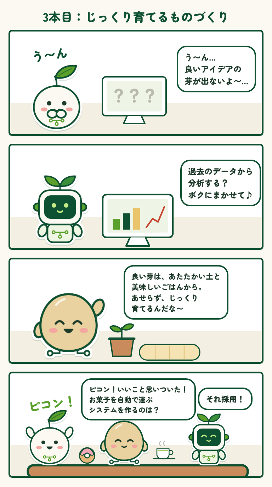

2026.10.16 公開
Geminiと一緒に、キャラクター3体の名前と性格を決めた
noteの「#AIとできたこと」企画に参加。名前の候補から4コマ漫画まで、Geminiと作りました。

はじめに
以前、LINEスタンプを作ったときに、3体のキャラクターが偶然できあがりました。葉っぱが1枚の芽の子、双葉が生えたロボット、まんまるの種の子です。名前をどうしようかと考えたこともありましたが、なかなか決められず、結局後回しにしていました。そんなとき見つけたのが、noteの「#AIとできたこと」の企画です。いい機会なので、GoogleのAI「Gemini」と一緒に、3体の名前や性格をいろいろ決めてもらうことにしました。
見た目の第一印象を聞く
まずは、3体の画像をGeminiに貼り付けて、「見た目から感じる性格や雰囲気を、3つずつ教えて」と聞いてみました。返ってきたのは、芽の子は「ピュアで素直な好奇心」、ロボットは「しっかり者のリーダー気質」、種の子は「どっしりとした包容力」といった答え。あごの小さな回路や、種の落ち着いた色まで読み取って、理由を付けてくれました。しっかり考えてくれてるなあ、と感心。どれも素晴らしい設定です！

名前の候補と商標チェック
次は名前です。候補を5つずつ出してもらい、気になったものを特許庁の商標検索（J-PlatPat）で調べてみると、「たねまる」と「テクモ」はすでに登録がありました。やっぱり名前で苦戦します。そこで結果をGeminiに伝えると、「被りにくい造語で、2〜4文字」と方針を変えて、もう一度候補を出してくれました。最終的に、芽の子は「めばり」、ロボットは「テクモバ」、種の子は「マルタネ」に決定。商標チェックで引っかからない名前が出てきてよかったです。

プロフィールができた
名前が決まったところで、3体のプロフィールも作ってもらいました。めばりは「アイデアひらめき担当」で、口ぐせは「ピコン！いいこと思いついた！」。テクモバは「開発担当」で「データ処理完了！ボクにまかせて♪」。マルタネは「見守り担当」で「あせらず、じっくり育てるんだな〜」。3体の関係やコンビ名まで付いていて、読んでいるうちに、キャラクターが動いている様子が思い浮かびました。最初は予定していませんでしたが、漫画も作ってもらおうと思いつきました。

4コマ漫画も作ってみた
プロフィールをもとに、Geminiに4コマ漫画のネタとセリフを3本考えてもらい、そのうち1本は絵まで描いてもらいました。「この画像の3体の見た目をそのまま使って」と頼んだだけで、できあがったのは想像以上の出来。面白かったのは、顔しか考えていなかったキャラクターに、体まで描かれていたことです。めばりは緑の服を着て机に向かい、マルタネはソファでお茶を飲んでいます。残りの2本は、手持ちのキャラ画像を使って漫画に仕上げました。




まとめ
Geminiと一緒に考えたことで、名前もプロフィールも漫画も、一気に形になりました。アイデアをたくさん出してくれるのは、AIの得意分野です。いっぽうで、商標のチェックや「この名前でいこう」と決めるところは、人の役目だと感じました。めばり、テクモバ、マルタネの3体の活躍も、楽しみにしていてください。漫画はシリーズ化するかも？これからも、AIとITで身の回りの「面倒」を「便利」に変えるものづくりを続けていきます。
制作メモ
キャラクターの名前・プロフィール・漫画のネタはGoogleのGemini、1本目の漫画の絵もGeminiが描いたものです。商標の確認は特許庁のJ-PlatPatで自分で行いました。記事の段落構成と下書きはAI（Claude）と作り、各段落に自分の感想を入れて確認・修正しました。